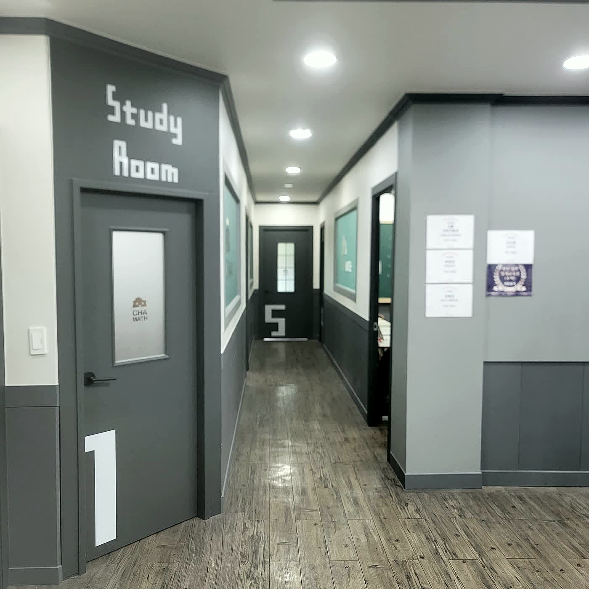

차수학 엄궁캠퍼스
부산 사상구 엄궁 · 초 · 중 · 고 수학
수학 지도 경력 21년. 원장이 직접 설계합니다.
반에 아이를 맞추지 않습니다. 아이에게 교재를 맞춥니다.
상담 · 평일 14:30–22:00 / 주말 15:00–20:00
01 — 사실
02 — 왜 진도가 문제인가
학부모님이 이미 겪고 계신 두 가지입니다.
반 진도는 평균에 맞춰 나갑니다. 이해하지 못한 단원을 안은 채 다음 단원으로 넘어가면, 그 구멍은 학년이 올라갈수록 커집니다. 아이가 못하는 게 아니라 넘어간 자리가 남아 있는 것입니다.
어느 단원을 어디까지 했는지, 무엇을 반복해서 틀렸는지가 기록으로 남지 않습니다. 그래서 새 학원은 늘 처음부터 다시 시작합니다. 잃어버리는 건 시간입니다.
03 — 개별 진도가 도는 방식
반을 먼저 정하고 그 안에 학생을 넣는 구조가 아닙니다. 학생의 실력을 먼저 재고, 거기서 교재가 정해집니다.
“어느 정도 하는 것 같다”가 아니라, 어느 단원을 몇 %까지 알고 있는지로 시작합니다.
자체 관리 교재에서 그 아이에게 필요한 것을 고릅니다. 학년이 같아도 교재는 다를 수 있습니다.
비어 있는 단원은 채우고, 이미 아는 단원은 확인만 하고 넘어갑니다.
70~80점 이상, 통과해야 다음 단원으로 넘어갑니다. 통과하지 못하면 그 단원을 다시 합니다.
한 학기 동안 쌓인 통과 기록과 오답 유형이 다음 학기 교재의 근거가 됩니다.
진도는 달력이 넘기지 않습니다. 단원평가가 넘깁니다. 날짜가 됐다고 다음 단원으로 밀지 않습니다.
04 — 수업을 받치는 다섯
백지에 써보게 하고 → 목차로 구조를 맞추고 → 모개념으로 되짚습니다. 세 단계를 통과해야 “안다”고 봅니다. 문제를 맞혔다고 아는 것이 아닙니다.
학생마다 자기 진도 계획표를 가집니다. 어디까지 왔고 다음이 무엇인지 학생도 학부모님도 볼 수 있습니다.
이번 주 것만 보지 않습니다. 지나온 단원을 누적해서 다시 확인합니다. 잊어버린 자리를 찾아냅니다.
아이가 다니는 그 학교의 기출을 3~5개년 분석해 예상문제를 만듭니다.
단원평가 통과와 누적 테스트 결과를 상점으로 쌓고 장학금으로 연결합니다. 수학이 오래 걸리는 과목이라 계속 다닐 이유가 필요합니다.
05 — 엄궁캠퍼스
강의실과 자습실이 한 층에 이어져 있습니다.

부산 사상구 엄궁로 186, 2층.
06 — 원장
인사말 대신 이력을 적었습니다. 학원을 고르실 때 실제로 확인하시는 것이 그쪽이라고 생각합니다.
07 — 학년별 안내
수업 시작 시간은 학년별로 정해져 있습니다. 정해진 시간에 시작해 정해진 시간에 끝냅니다. 자세한 요일 편성은 상담 때 안내드립니다.
08 — 지역 내신
전국 공통 문제집만 풀어서는 그 학교 시험지에 대응이 안 됩니다. 아이가 다니는 학교의 기출을 3~5개년 모아 분석하고, 그 학교 형태에 맞춘 예상문제로 대비합니다.
시험 범위 · 출제 경향 · 서술형 비중은 학교마다 다릅니다. 위 학교는 학교별 분석 자료를 따로 보유하고 있습니다.
엄궁차수학학원에서 MAAT 수학경시대회를 시행합니다. 학원 안에서만 도는 시험이 아니라, 밖에서 재보는 기회를 함께 만듭니다.
기출 분석과 시험 대비 내용을 학원 블로그에 계속 올리고 있습니다. 어떤 식으로 준비하는 곳인지, 상담 전에 직접 확인해보셔도 됩니다.
네이버 블로그에서 확인하기09 — 자체 기록 시스템
학기가 끝나도 기록이 남고, 그 기록이 다음 교재를 정합니다.
대부분의 학원에서 한 학기가 끝나면 그 학기가 사라집니다. 무엇을 통과했고 무엇에서 계속 걸렸는지가 남지 않으니, 다음 학기는 다시 감으로 시작합니다. 성장기록은 그 자리를 메우려고 만든 저희 자체 시스템입니다.
| 학생 | 중2 A군 · ○○중 |
|---|---|
| 단원평가 | 이차방정식 — 2회차 통과 |
| 반복 오답 | 근의 공식 활용 문제 |
| 다음 조치 | 다음 교재에 해당 유형 보강분 추가 지정 |
실제 기록은 학생 정보를 익명 처리해 상담 때 보여드립니다.
10 — 상담
아이 학년과 지금 상황만 알려주시면 됩니다. 진단 테스트와 상담 일정은 통화 중에 잡아드립니다.